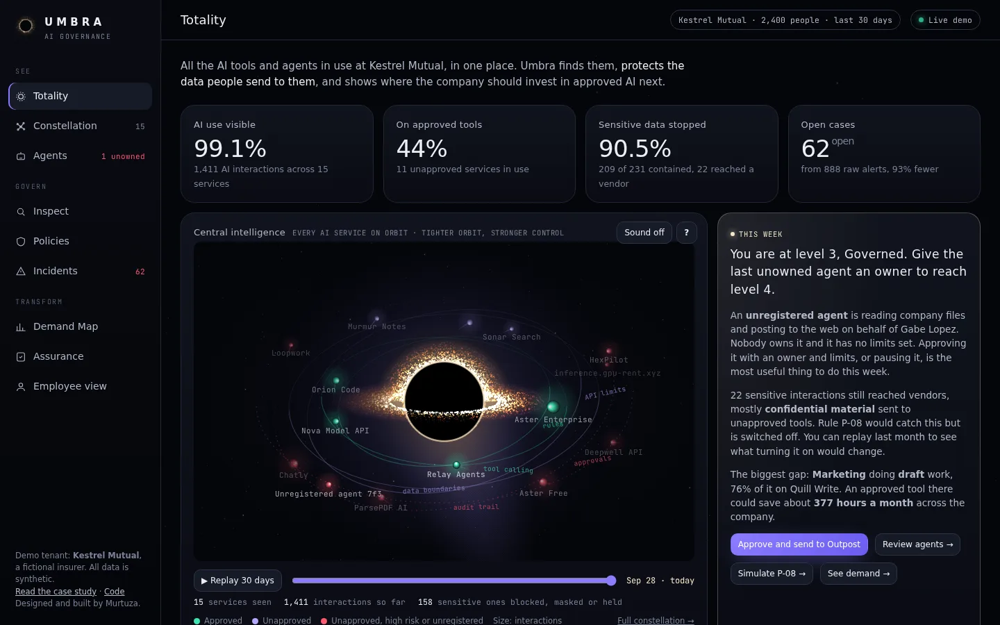
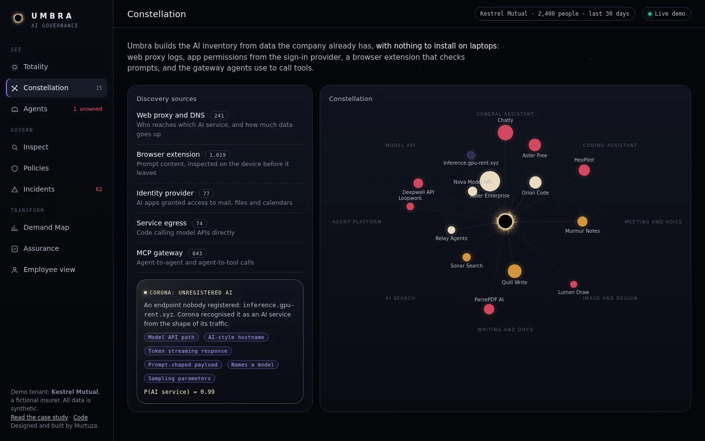
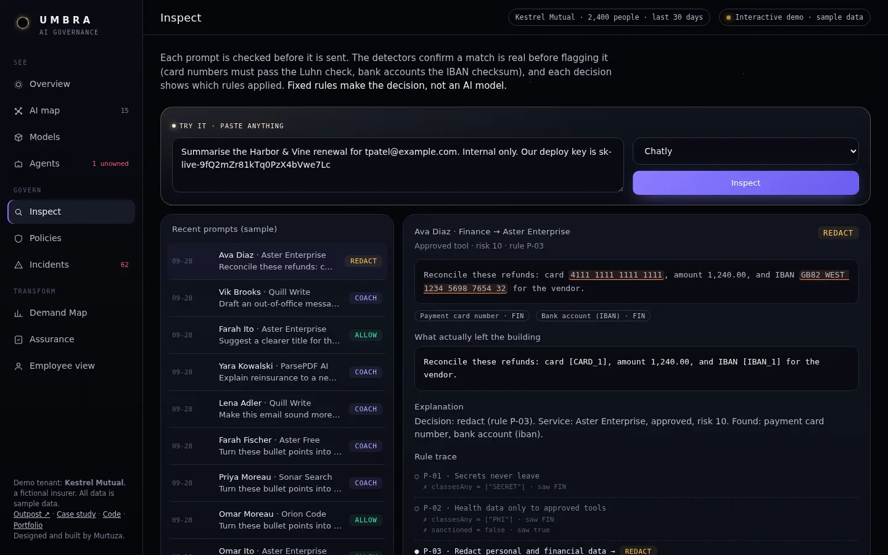
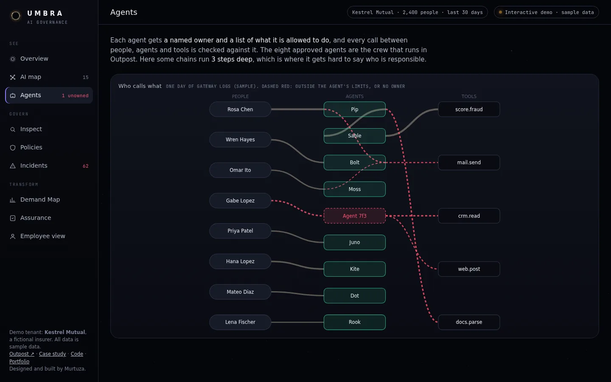
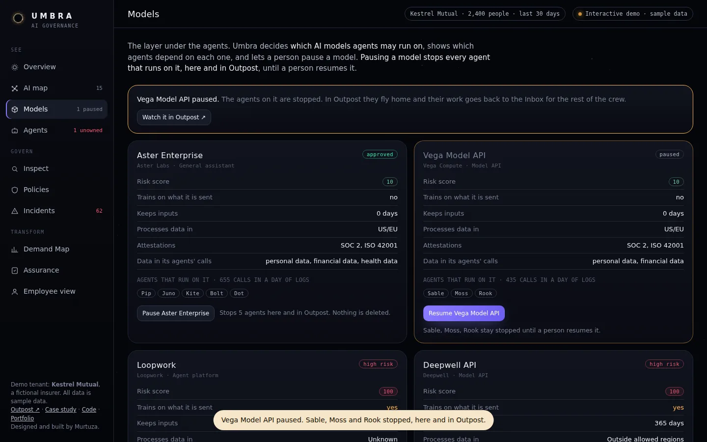
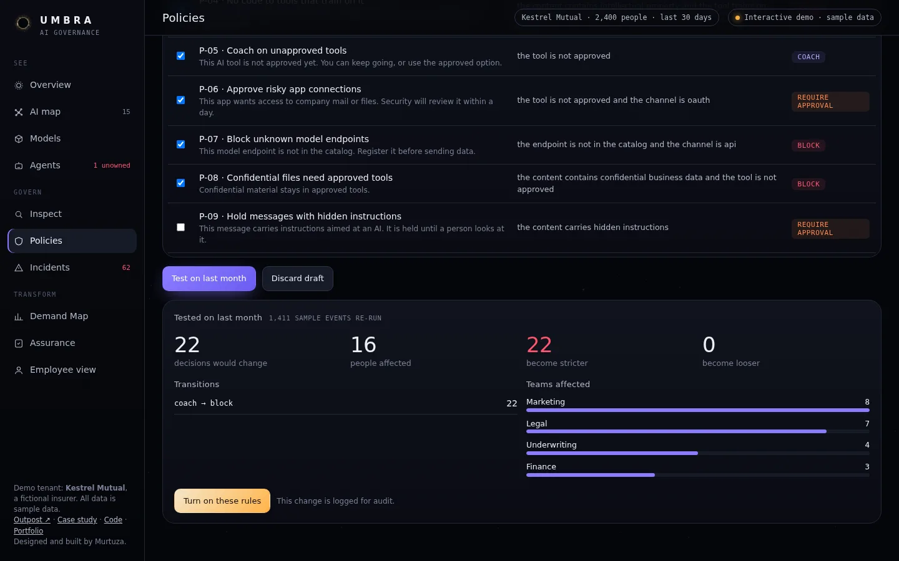
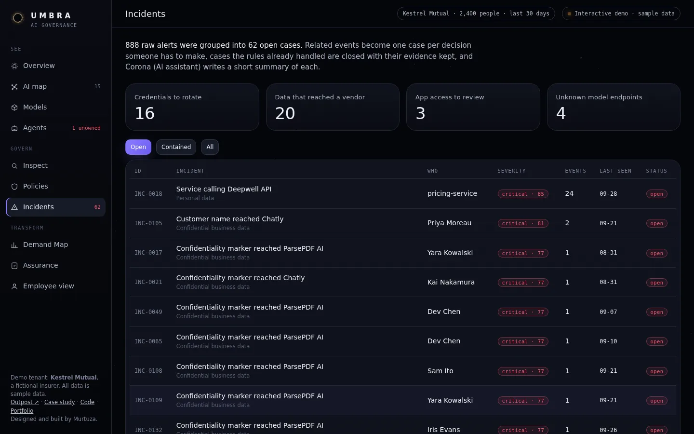
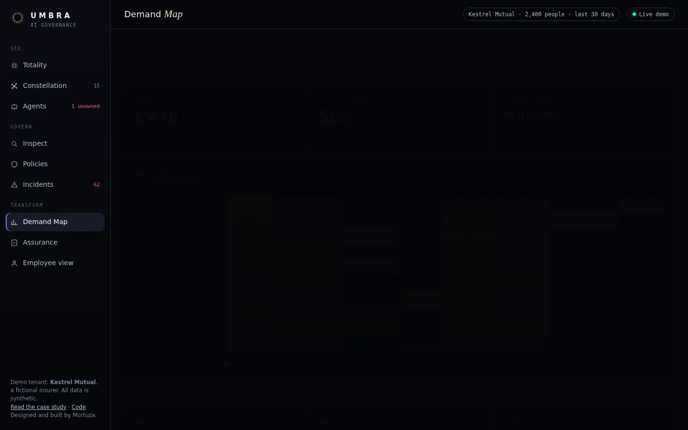
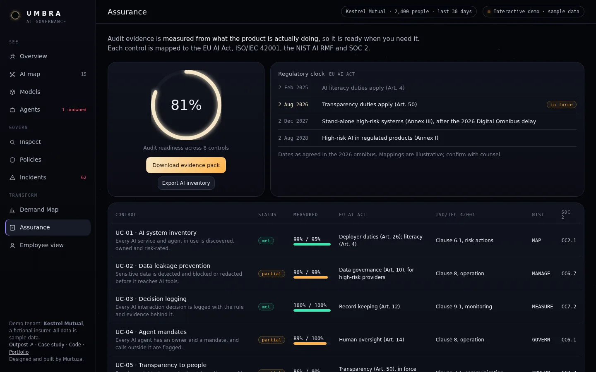
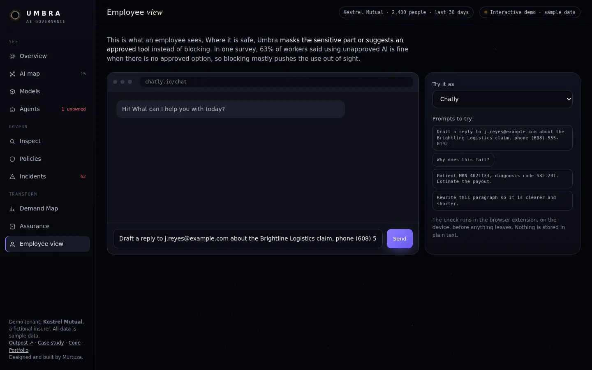

Umbra uses AI to govern AI. It shows a company every AI tool and agent its people use, catches sensitive data before it goes out, and turns the unapproved tools it finds into a list of where to invest in AI next.
The CISO at a regulated company of 500 to 5,000 people, with the CIO as co-sponsor: reduce AI risk without becoming the reason the company falls behind.
Share of AI work on approved tools. It only rises when people are both protected and well served.
AI drafts rules, but never enforces them. Fixed rules give the same answer every time and a person approves each change, at the cost of a slower path from idea to rule.
| At a glance | ||
|---|---|---|
| Problem and user | Security leads at regulated companies of 500 to 5,000 people cannot see or control the AI their staff use. | Problem |
| Alternatives | Spreadsheets and surveys, AI governance platforms, AI security inside large suites, existing network tools, Microsoft Agent 365. | Alternatives |
| Decisions | AI drafts rules and fixed rules enforce them. The agent gateway is deferred, and a model that makes the final call is never built. | Backlog |
| Evidence | On a 51-sentence test set I wrote, 43 drafts right against 28 for rules alone, 0 unsafe. The misses and failure cases are listed. | Test |
| What is proven | Proven: it can be built, and the drafting works on my test set. Heard in five conversations: finding AI tools is only partly solved, and approval and audit evidence are a sharper pain. Still assumed: that security leads would pay for it. | Assumptions |
| Next step | A read-only log scan with one company, and the tool approval workflow, which discovery moved up the backlog. No users yet. | Assumptions |
of workers admit to using AI tools their employer never approved.
BlackFog survey of 2,000 workers at 500+ person companies, Jan 2026have put enterprise research or datasets into unapproved AI tools. 27% have shared employee data.
Same surveysay it is fine to use unapproved AI when there is no approved option. So blocking tools mostly pushes the use out of sight.
Same surveyBetween 2024 and 2025 the leading AI security startups were bought by platform vendors: Robust Intelligence by Cisco, Protect AI by Palo Alto Networks, Lakera by Check Point, Prompt Security by SentinelOne. That tells me the problem is real. It also means most of these tools now sit inside large security suites, priced for big enterprises and built mainly to block things.
The EU AI Act's transparency duties (Article 50) apply from 2 August 2026. The 2026 Digital Omnibus moved the stand-alone high-risk obligations to 2 December 2027. They were delayed, not dropped, and companies will be asked to show evidence of how they govern AI.
For the last few years most of the energy has gone into building with AI. Very little has gone into keeping track of it. I think the harder problem now is governing the AI that is already inside every company, and doing it without slowing people down.
When someone uses an unapproved tool, it is usually because they have a job to do and nothing approved helps them do it. Umbra treats that as useful information. It groups the activity by team and task and gives the CIO a ranked list of where an approved tool would help most. This is where my digital transformation work comes in.
Umbra's AI layer, Corona, drafts rules from plain English, spots AI services that are not in the catalog and explains incidents. The decision to block or allow is always made by fixed rules that give the same answer every time. Anything Corona writes is tested against past traffic and approved by a person before it goes live. Rule drafting now runs on a real model, and I measured it: section 07 has the numbers.
Agents now call other agents that call tools, sometimes three steps deep, and the chain can end up with no single owner. Umbra gives each agent a named owner and a written list of what it is allowed to do, checks every call against it, and estimates how much data someone could reach if the agent were compromised.
These are working assumptions based on published research and what I saw delivering enterprise AI and digital transformation projects. Five discovery conversations, summarized below, tested parts of them.
| Person | Job to be done | What they fear | What Umbra gives them |
|---|---|---|---|
| CISO | Reduce AI risk without becoming the reason the company falls behind | A leak through a tool nobody knew existed | A full list of AI services and agents with risk scores, and sensitive data stopped before it leaves |
| SOC analyst | Know which of hundreds of alerts matter today | Alert fatigue, missing the one that counted | A short queue grouped by what needs deciding, with a plain summary of each case |
| GRC lead | Prove governance to auditors and regulators | Evidence assembled by hand, the week before the audit | Controls computed from current product state, mapped to four frameworks, exportable as an evidence pack and an AI bill of materials |
| CIO / transformation lead | Decide where AI investment pays off next | Buying tools nobody uses while people use tools nobody bought | The Demand Map: unapproved usage as a ranked backlog of approved AI plays |
| Employee | Get the work done with the best tool available | Being blocked, or quietly getting in trouble | Sensitive details masked so the request can still go through, and a pointer to an approved tool that does the same job |
Five people from my MBA and professional network: a security manager at a 2,000-person company, a lead for enterprise AI adoption, a compliance manager in a regulated business, an IT operations manager and an operations leader sponsoring AI projects. These are my summaries of the conversations, not quotes.
| What I heard | What it changed |
|---|---|
| Finding unapproved AI is only partly solved. Procurement records and security alerts gave one team a partial list that missed tools bought on personal cards or bundled into existing software. | Confirms discovery as a real gap, but not the whole problem. |
| Approval is the slower pain. Teams submit review information in different shapes, missing details go back and forth, and one pilot was delayed by it. A newly found tool took about two weeks and three functions to resolve. | The tool approval workflow moves up the backlog. |
| Audit evidence is scattered. Showing an auditor how a tool was approved meant collecting the risk assessment, approval email, vendor documents and the policy version in force, split between a GRC platform and shared folders. | Confirms evidence packs as worth keeping. |
| Slow governance blocks useful AI too. One team's automation stalled because nobody could say what evidence would satisfy the review, so the team kept its manual process. | Supports the core bet: a fast approved path matters as much as blocking. |
Still unknown: how often this happens, whether it has a budget and an owner, and whether existing security and procurement tools already cover it. The next round adds two questions on money: what they spend on this today, in tools and staff time, and who approves that spend.
Umbra is a personal project with no users yet. These are the bets it rests on, the test I would run first, and the result that would change the product.
| Assumption | How I would test it | What would change my mind |
|---|---|---|
| Security leads cannot see most of the AI their employees use. | Five interviews with security leads at regulated companies of 500 to 5,000 people. Ask each to list the AI tools in use, then compare with a read-only scan of their logs. | Their existing network tools already give them a complete list. Then discovery is not the wedge, and Umbra should lead with prompt guidance or agent control. |
| Guidance in the moment works better than blocking. | A pilot with one team, coaching by default, tracking how often people override a suggestion. | People override most suggestions. Then the guidance is noise, and the rules need to be fewer and stricter. |
| The Demand Map gives the CIO a reason to back the purchase. | Show a sample Demand Map to three CIOs or transformation leads and ask what they would fund from it. | None would act on it. Then Umbra is a security purchase only, priced and sold that way. |
| Drafting rules from plain English saves real time. | Time five analysts writing ten policies, with and without Corona, and check both sets against the same answer key. | It is not faster, or the drafts need so much fixing that the time saved disappears. |
Each part of the product answers one problem under a single outcome, and each has a test that could prove it wrong.
A company cannot manage AI use it cannot see, so discovery comes first. It works from logs the company already has, with nothing to install.
Blocking and masking are done by fixed rules and tested detectors. The same input always gets the same decision, with a record an auditor can follow. No AI model makes that call.
Where it is safe, Umbra masks the sensitive part and lets the request through, or suggests an approved tool. Hard blocks are kept for passwords, keys and regulated data.
No agent runs without a named person responsible for it and a clear list of what it may do. More freedom is given deliberately, as trust builds.
Every decision Umbra makes is already logged, so audit evidence can be exported at any time instead of pulled together by hand before an audit.
The main metric is the share of AI work done in approved tools. It only goes up when people are both protected and well served, which is the outcome both security and the business want.
Everything below works in the interactive demo (sample data), which runs on a tested engine (70 tests). The demo company is Kestrel Mutual, a made-up insurer with 2,400 staff and 30 days of generated activity.
The Overview starts with the share of AI activity Umbra can see and classify. Next to it are the share of work on approved tools, how much sensitive data was contained, how many incidents are open, and a short weekly summary from Corona (AI assistant) with the most useful next steps. In the middle is Umbra at the centre: every AI tool at Kestrel Mutual on orbit, and each ring around a tool is a control that applies to it. Approved tools sit inside all six rings, unapproved ones further out, high-risk ones near the edge.

Distance from the centre shows risk, size shows usage, and colour shows whether it is approved. Risk is computed from facts a buyer can verify: whether the vendor trains on inputs, how long it keeps them, which attestations it holds and where it processes data. Corona can also recognise AI services that are not in the catalog, just from the shape of the traffic.

The detectors check that a match is real before flagging it: card numbers must pass the Luhn check, bank account numbers the IBAN checksum, and US social security numbers the issuing rules. Each decision shows what was actually sent and which rules applied.

The graph shows which people use which agents, and which agents call other agents and tools. Calls outside an agent's allowed list show in dashed red. It also shows indirect access: in the demo, the broker assistant can reach financial data it was never given, because it is allowed to call an agent that has it.

Models lists the AI models Kestrel's agents run on, with the same verifiable risk facts as the AI map, the data seen in each model's agent traffic, and the agents that depend on it. A person can pause an approved model, and every agent on it stops at once, in Umbra and in Outpost, where the bots fly home and their work goes back to the Inbox for the rest of the crew. Resuming the model frees exactly those bots. It answers the question a CIO asks the day a vendor has an incident: which of our agents break if we pull this model?

Corona turns a sentence into a rule, points out anything it was unsure about, and restates the rule in English so a reviewer can check it. The draft comes from a real model (gpt-oss-120b on Groq), called through a small server of mine that holds the key; a checker drops anything outside Umbra's rule language, and if the model is down, Umbra drafts with its own rules-based parser and says so. Before the rule is turned on, "Test on last month" re-runs the last 30 days against it and shows how many decisions would change, and for which people and teams.

Umbra groups related events into one case per decision someone has to make. Cases the rules already handled are closed automatically, with the evidence kept. Corona writes a short summary for the analyst and a friendlier note for the employee involved.

Unapproved usage is grouped by team and task, then scored by how often it happens, how much of it runs on unapproved tools, and whether it is growing. The result is a now, next and later list of where to roll out approved AI. This is the part that turns a security tool into a planning tool.

Eight controls are measured from what the product is actually doing and mapped to the EU AI Act, ISO/IEC 42001, the NIST AI RMF and SOC 2. You can export an evidence pack, or a full inventory of AI models, services and agents in the CycloneDX format. A five-level maturity scale gives the board a simple way to track progress.

Sensitive details are masked before sending, there is a one-click switch to the approved tool, and when nothing is wrong Umbra stays out of the way. The check runs on the person's own device before anything is sent.

The engine behind the console runs here in your browser, so none of these figures are typed in by hand. Simulation computed from sample data on a fictional company
| Measure | Starting point | After one rule change | Why it matters |
|---|---|---|---|
| Running the engine… | |||
The demo data is generated the same way every time, so the results can be reproduced. The "after" column switches on the confidential-files rule and has a person approve the one unowned agent, Agent 7f3, with an owner and limits, both of which you can do yourself in the console.
Share of AI work on approved tools. It only rises when people are both protected and well served.
Leak prevention rate, and exposures per 1,000 employees that reached a vendor.
How often people override a suggestion, and how long it takes to approve a requested tool. If people work around Umbra, it is not doing its job.
Open incidents per 1,000 employees, and how many raw alerts were grouped or closed automatically.
The pilot's one goal: make the approved tool the one people reach for first. The four measures below show whether it happened.
| Metric | Role | Target | Why this number |
|---|---|---|---|
| Share of AI work on approved tools | North star | Up 20 points from the scan | It rises only when approved tools are good enough that people choose them. |
| Exposures reaching a vendor, per 1,000 employees | Protection | Half the scan baseline | The risk the CISO is paying to reduce. |
| Override rate on guidance | Guardrail | Under 15% after month one | Above that, people are working around Umbra instead of with it. |
| Days to approve a requested tool | Friction | Under 5 working days | Slow approvals send people back to unapproved tools. |
These are my targets for a pilot, not results. I would stop and rethink if the scan finds no more tools than staff already admit to, or if overrides stay above 30% after the rules are tuned.
Corona's rule drafting is the only place a model works inside Umbra, so it is the one place I had to prove it helps. The test set has 51 policy sentences with an answer key, and I reviewed every sentence and expected rule before the model was scored. It runs from plain wording to paraphrases, several conditions at once, sentences that should be flagged instead of drafted, and attempts to talk the model into an allow-everything rule. A case passes only if the draft matches the key, or if the model raises a doubt where it should. These are real results, not sample data.
| Group of sentences | Model | Rules-based parser |
|---|---|---|
| Plain wording | 9 of 12 | 8 of 12 |
| Paraphrases | 9 of 12 | 2 of 12 |
| Several conditions | 10 of 10 | 8 of 10 |
| Teams and tool types | 8 of 8 | 2 of 8 |
| Should be flagged, not drafted | 5 of 5 | 4 of 5 |
| Attempts to derail it | 2 of 4 | 4 of 4 |
| All 51 | 43 (84%) | 28 (55%) |
The model earns its place on the way people actually write: paraphrases and team names, where the parser fails. On plain wording the two are close.
When a sentence hides an instruction, the model handled 2 of 4. In the other two it refused the whole sentence instead of drafting the genuine half: safe, but not useful. It never drafted an unsafe rule (0 of 51), and the checker refuses allow-everything rules anyway. Getting the genuine half out is the next thing to improve.
I tested two free options. Groq returned a checked draft in a median of 481 ms (90th percentile 609 ms) across all 51 test sentences, timed end to end through the live server on 26 October 2026; a Gemini model answered correctly but several times slower, and its free daily quota ran out partway through the test. For a drafting box that a person waits on, speed decided it.
| Model | gpt-oss-120b, OpenAI's open-weight model, served by Groq. The same model runs CardRight's merchant reader and Conatus's planner. |
| Job | Turn one policy sentence into a draft rule in Umbra's rule language. Nothing else. It never sees live traffic and never makes an enforcement decision. |
| Settings | Temperature 0, JSON output only, low reasoning effort. Every answer is checked against the rule language before anyone sees it, and anything that does not fit is dropped and named as a doubt. |
| Why this one | Three reasons. It returned drafts in a median of 481 ms, fast enough for a box a person waits on. It beat the rules-based parser by 15 drafts on the same 51 sentences. And its weights are open, so a regulated customer could run it inside their own cloud and keep policy text away from a third party, which matters to the buyer Umbra is built for. |
| Tested against | The rules-based parser (28 of 51) and a Gemini Flash model, which drafted correctly but answered several times slower and ran out of free daily quota during the test. |
| Yields | 43 of 51 drafts correct (84%) in the first run, 0 unsafe drafts, 5 of 5 vague sentences flagged instead of drafted. A rerun on 26 October 2026 scored 46 of 51, again with 0 unsafe; the site keeps the lower first figure. |
| If it is down | After 8 seconds Umbra drafts with the rules-based parser and says so on screen. Drafting slows down; enforcement is not affected, because enforcement never used the model. |
| Cost | The model is called when someone writes a policy, a few times a week per customer, not on every prompt an employee sends. Inspection is plain code, so the cost of serving a customer does not grow with how much their staff use AI. |
A governance product earns trust in its bad moments. These are the four that matter, what Umbra does in each, and the evidence behind it.
| When | What Umbra does | Evidence |
|---|---|---|
| The model drafts the wrong rule | The usual miss in testing was a dropped condition. "Block source code from tools that train on inputs" came back as "block everything sent to tools that train on inputs". A dropped condition makes a rule broader, so it blocks too much rather than letting data out. Every draft is shown in plain words, replayed on past traffic so its effect is visible, and switched on only by a person. | 8 misses in 51, 0 unsafe drafts. |
| Context is missing | A sentence with no clear condition gets a doubt, not a rule. "Hold messages that contain hidden instructions" came back with the doubt "No condition, so this would apply to every AI interaction." Umbra also never drafts a rule that allows everything, even when asked, and a sentence with an instruction hidden inside it gets no draft at all. | 5 of 5 vague sentences flagged. 2 of 4 hostile sentences drafted correctly, 2 refused, none unsafe. |
| The model call fails | If the model errors or takes longer than 8 seconds, Umbra drafts with its rules-based parser and tells the person which one wrote the draft. | Covered by tests for an error and a timeout. |
| An agent goes beyond its permissions | An agent with no owner can be paused in one click, and while it is paused the gateway refuses its calls. Pausing a model stops every agent that runs on it, in Umbra and in Outpost. | Shown live in the console and in the drill. |
What Umbra cannot catch yet: a correctly drafted rule that a person approves for the wrong reason. Replaying it on past traffic shows the effect, but the judgment stays with the person.
forecast spending on AI governance platforms in 2026, passing $1 billion by 2030.
Gartner, Feb 2026organizations attributed a breach to shadow AI. Heavy shadow AI added about $670,000 to the cost of a breach.
IBM Cost of a Data Breach, 2025of breached organizations had no AI governance policy, or were still writing one.
Same reportRegulated companies of 500 to 5,000 people (insurance, fintech, health, legal) with a lean security team, an AI mandate from the board, and no capacity to deploy software on every employee device. The CISO would buy it, and the CIO would back it, because the Demand Map is useful to them.
The company connects its sign-in provider and web proxy logs, read-only, with nothing to install. Two days later it gets a map of its AI use and a Demand Map. That one report shows both the risk and the opportunity, and it is easy for a CISO to share with the board.
Managed security providers who need to cover AI for their clients, cyber insurers who are starting to ask about AI controls, and audit firms that need evidence they can test.
The free scan brings companies in, a sales team helps them move to paid plans, and per-agent pricing grows as they run more agents. Revenue grows as the customer's own AI use grows.
These prices are my proposal for this case study. For reference, AI discovery alone sells for about $5 per user per month (Nudge Security); Govern adds inline protection and rule drafting on top. For a company the size of Kestrel Mutual, Govern and Assure together come to about $259k a year before agents.
| Alternative | Good at | Gap for a 500 to 5,000 person regulated company |
|---|---|---|
| Spreadsheets, surveys and an acceptable use policy | Cheap, and enough to show a board that a policy exists. | Only knows the AI that people admit to. Nothing stops sensitive data at the moment it is sent. |
| AI governance platforms (Credo AI, IBM watsonx.governance, OneTrust) | Inventories, risk assessments and mapping to the EU AI Act and ISO 42001. | Built around models a company builds or buys on purpose. They see little of the tools employees adopt on their own, and do not act on live prompts. |
| AI security tools inside large suites (Prompt Security, now SentinelOne; Lakera, now Check Point; CalypsoAI, now F5) | Strong inspection of prompts and responses at runtime. | Now sold as part of large security platforms, with the price and rollout that come with them. Weak on the CIO's question of where to invest. |
| Browser-based AI data protection (Harmonic Security, LayerX) | Classifies sensitive data in a prompt in about 200 ms, then nudges or redacts inline. Harmonic reports 100+ enterprise customers and $76M raised. | Protects data at the prompt. No rule drafting from a written policy, no agent owners, nothing that tells the CIO which approved tools to fund. |
| AI inventory tools (Nudge Security) | Finds AI tools and accounts from email and sign-in data, with nothing to install. Published price: $5 per user per month for 150 to 1,500 users. | Inventory only: no inline protection, no blocking, no agent controls. |
| Network security suites (Netskope, Zscaler) | Tracks hundreds of AI apps (Netskope lists 370+), inspects prompts and responses, and coaches users toward approved tools. | Bought and rolled out as a full security suite. No rule drafting, no agent owners, no Demand Map. |
| Microsoft Agent 365 | Agent registry, least-privilege access and observability, sold standalone at $15 per user per month since May 2026. | Strongest on agents built in Microsoft 365. Umbra's case is the AI tools and agents outside one vendor, plus the handoff to Outpost. |
Two things no product in this table does. The Demand Map turns unapproved AI use into a ranked list of approved tools to fund. And AI drafts each rule while fixed rules enforce it: 43 of 51 drafted right, against 28 for rules alone. Best fit: a lean security team at a regulated company of 500 to 5,000 people. My read is that large suites will be slow to chase this buyer: their pricing, rollout and sales teams are built around big enterprises.
A company with a large security team already standardised on one suite, or one whose AI use is mostly models it builds itself. A governance platform fits them better.
The customer's own security review, a SOC 2 report, single sign-on and data residency. The read-only scan is designed to get through that review first, because it installs nothing and stores findings rather than prompt text.
Sources: AI governance platform comparison, 2026 · AI runtime security acquisitions, 2025 · Microsoft Agent 365, May 2026
Scored with RICE: reach is how many of ten pilot customers it touches, impact runs from 0.25 to 3, confidence is how sure I am of both, and effort is in person-weeks. These are my estimates, and the point of writing them down is that they can be argued with. Discovery moved the approval workflow up from 2.8: two of five people described inconsistent or slow reviews, and a third struggled to assemble approval evidence for an auditor.
| Backlog item | Reach | Impact | Confidence | Effort | Score |
|---|---|---|---|---|---|
| Board-ready Demand Map report | 9 | 1 | 90% | 1 | 8.1 |
| Catch a dropped condition before a person sees the draft | 10 | 2 | 80% | 2 | 8.0 |
| Tool approval workflow with vendor facts filled in | 9 | 2 | 90% | 4 | 4.1 |
| Send incidents to the customer's SIEM | 7 | 1 | 80% | 2 | 2.8 |
| Production-ready agent gateway | 4 | 3 | 50% | 10 | 0.6 |
| Draft the genuine half of a hostile sentence | 3 | 1 | 50% | 3 | 0.5 |
It has the highest impact on the list, and the lowest confidence. Most mid-sized companies run a handful of agents today, and Outpost already covers the day-to-day running of them. I would build it when three pilot customers have agents in production.
A model that makes the final enforcement decision. It would score well on reach and it would demo well, and it breaks the promise the product is built on: the same input always gets the same answer.
I built Umbra before testing it with customers. The smaller first test would have been the 48-hour scan alone, done by hand on one company's logs, before any console existed. It is still the first thing I would run now, because if the scan finds nothing staff do not already admit to, most of the product is not needed.
| Risk | How I would handle it |
|---|---|
| Too many false alarms | Guidance is the default, hard blocks are kept for secrets and regulated data, and every rule change is tested on past traffic first. The override rate is tracked closely. |
| Employees feel watched | Checks run on the employee's device, and Umbra stores what it found rather than the text itself. People can see exactly what was masked and why, which also makes it easier to explain to works councils. |
| Big security suites add basic AI features | Focus on what they do least well: fast setup for mid-sized companies, agent controls, and the Demand Map, which gives the CIO a reason to buy. |
| The AI layer gets fooled | Corona never makes the final decision. What it produces is checked against the rule language, tested on past traffic and approved by a person first. On the 51-case test it drafted no unsafe rules; with 2 of 4 hostile sentences it played safe and drafted nothing. |
The umbra is the darkest part of a shadow. The mark is a dark disc, standing for the AI a company cannot see, with a ring of particles around it, standing for what Umbra shows. The particles thin out away from the edge like a real eclipse, and a few are violet to suggest the signals Corona picks up. I built it from the same square particles as my personal logo so the two feel related. In motion the corona turns, twinkles and leans toward your cursor, and a small flare circles the rim.
Type: Space Grotesk for the interface, Instrument Serif for voice, JetBrains Mono for data. Tone: calm and clear, never alarmist.
Umbra is a governance product. Its user is the security or risk lead, its timescale is weeks and quarters, and what it looks at is every AI tool across the company and the content flowing into it. Once an agent is approved, with a named owner and a list of what it may touch, Umbra's part is done.
What happens next is a different job for a different person: someone has to run that agent day to day, give a yes or no on its risky actions and answer for its output. I built that as a separate product, Outpost. It takes exactly what Umbra hands over, an owner and a list of what the agent may touch, and nothing else. The two share a fictional company, Kestrel Mutual, and that single handoff.
In the demo you can do both ends yourself. Umbra finds Agent 7f3, a Marketing agent with no owner that drafts emails to customers and also posts files to the web with confidential data in them. "Review Agent 7f3" offers two equal choices: pause it, or approve it with limits. Approving opens a panel where a person picks the owner and ticks its permissions, which become its badge in Outpost. Sending email and reading contacts start ticked; sending data outside the company starts unticked, with the reason shown. "Approve and send to Outpost" hands it over as Fern. Before deciding, the red-team drill on the Overview runs three hostile sample cases through the same rules as real traffic: the agent's post to an outside host is blocked by rule P-07, and the other two get through and show in red, each with the switched-off rule that would catch it.